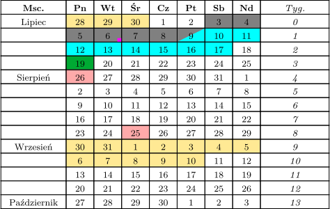

Wakacje 2021
| sesja (poprawkowa) na UW | |
pobyt w Ludwikowicach Kłodzkich  |
|
pobyt w Podkarpackiem  |
|
| tradycyjna data Hidżry | |
| rocznice i daty specjalne bez zaplanowanych obchodów |
| sesja (poprawkowa) na UW | |
| pobyt w Ludwikowicach Kłodzkich |
|
| pobyt w Podkarpackiem |
|
| tradycyjna data Hidżry | |
| rocznice i daty specjalne bez zaplanowanych obchodów |